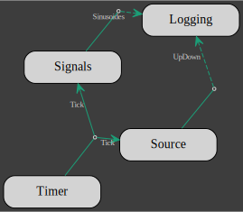
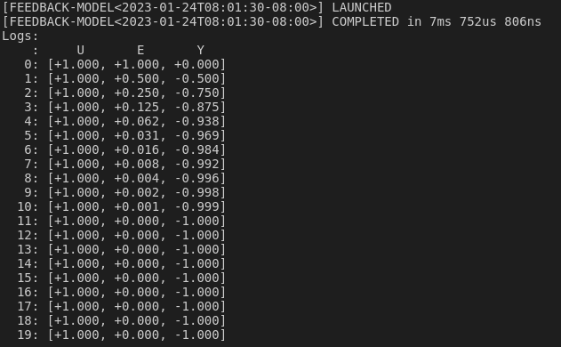

Introduction
gmt_dos-actors is the Rust crate that is the backbone of the computing framework for the integrated model of the Giant Magellan Telescope.
It is based on the actor model but specially adapted for integrated modeling purposes.
In order to use the crate, you must have Rust installed on your machine and be familiar with the Rust language
The minimum Rust version for the gmt_dos-actors is 1.66.0
GMT Actors Model
A GMT integrated model is a collection of actors, each actor executing a specific task or set of tasks and exchanging data at predefined sampling rates.
Actors
An actor is composed on 3 elements:
- a set of inputs,
- a set of outputs,
- a client.
Both outputs and inputs are optional but an actor must have at least either one input or one output. Inputs and outputs may be sampled at a different rate, but the rate must be the same for all inputs and for all outputs.
An actor runs within its own thread independently of other actors and perform 3 functions:
- collect and read inputs into the client,
- update the state of the client,
- write and distribute the outputs from the client to other actors.
These 3 functions are excuted sequentially within a loop.
A client must comply with the definition of the actor interface.
The interface consists in 3 traits: Update, Read and Write.
A client must:
- implement the
Updatetrait, - have an implementation of the
Readtrait for each input, - have an implementation of the
Writetrait for each output.
Actor inputs and outputs are given a unique type, usually an empty Enum.
Each input and output must implement the UniqueIdentifier trait which associated type DataType is set to the primitive type of the client data.
As an example, lets write an interface for a client which task is to multiply an integer by e. Lets define
- the client:
#[derive(Default)]
struct Client {
data: i32,
}- the input
In:
#[derive(UID)]
#[uid(data = "i32")]
enum In {}- the output
Out:
#[derive(UID)]
#[uid(data = "f32")]
enum Out {}Each input and output is given a unique type (here an empty Enum) that implements the UniqueIdentifier trait with the derive macro UID.
The input/ouput primitive types (i32 for the input and f32 for the ouput) are affected to the associated type DataType of the UniqueIdentifier traits.
And now lets build the interface:
- update is empty, this simple task can be done at the output
impl Update for Client {}- read input
impl Read<In> for Client {
fn read(&mut self, data: Arc<Data<In>>) {
self.data = **data;
}
}
- write output
impl Write<Out> for Client {
fn write(&mut self) -> Option<Arc<Data<Out>>> {
Some(Arc::new(Data::new(self.data as f32 * std::f32::consts::E)))
}
}Actors exchange their clients data that is contained inside the structure Data.
The type of the client data can be anything as long as the input that receives it or the output that sends it, implements the UniqueIdentifier trait.
Once the actor to client interface has been written, the client can then be used to build an actor.
Here is the signature of the Actor type:
struct Actor<C, const NI: usize = 1, const NO: usize = 1> where C: UpdateAn actor takes 3 generic type parameters:
C: the type of the client,NI: the sampling rate of the inputs,NO: the sampling rate of the outputs.
Sampling rates are given as ratio between the simulation sampling frequency and the actor inputs or outputs sampling frequency.
The where clause required that the client implements the Update trait, meaning that anything can be an actor's client as long as it implements the Update trait.
Actors implements the From trait for any type that implements the Update trait.
As a consequence, a client can be converted into an actor with:
let actor = Actor::<Client,1,1>::from(client);When using the default value (1) for the inputs and outputs rate, they can be omitted:
let actor = Actor::<Client>::from(client);In that case, the compiler is also able to infer the client type:
let actor = Actor::<_>::from(client);or we can use the Into syntax:
let actor: Actor::<_> = client.into();An actor with no inputs must set NI to 0 or use the type alias Initiator defined as Initiator<C, const NO: usize = 1> = Actor<C, 0, NO>:
let no_input_actor = Initiator::<_>::from(client);An actor with no outputs must set NO to 0 or use the type alias Terminator defined as Terminator<C, const NI: usize = 1> = Actor<C, NI, 0>:
let no_output_actor = Terminator::<_>::from(client);The conversion methods from and into consume their arguments meaning that the client is no longer available once the actor has been created.
This is not always desirable, instead the new method of Actor can be used to pass a reference to the client into an actor.
It is worth noting that all the inputs and outputs of an actor will also be given a copy of the reference to the client in order to pass data to it and to get data from it. And because an actor performs many of its own tasks asynchronously, a client must first be wrapped into the thread-safe smart pointers Arc and Mutex like so
let thread_safe_client = Arc::new(Mutex::new(client));followed by the actor declaration
let actor = Actor::new(thread_safe_client.clone());Note that all types that implements the Update trait can be converted into a thread safe type with
let thread_safe_client = client.into_arcx();A unique name can be given to an actor. The name will be use to identify the actor's client in the model flowchart. The actor's name (here "aleph") can be set either like this:
let actor = Actor::<_>::from((client, "aleph"));or like this
let actor: Actor::<_> = (client, "aleph").into();or even like this
let actor = Actor::new(thread_safe_client.clone()).name("aleph");Data
The essential role of actors is to pass data through channels from one client to another client by the mean of their respective actorRead/Write interfaces .
The data is encapsulated into a tuple structure Data<U>:
pub struct Data<U: UniqueIdentifier>(<U as UniqueIdentifier>::DataType, PhantomData<U>);Each container Data<U> is uniquely defined with a type parameter U,
the trait bound on U means that U must implement the UniqueIdentifier trait and the actual type of the data
that is moved around is given by the trait associated type UniqueIdentifier::DataType.
As an example, lets define 2 clients ClientA and ClientB and a double precision vector Vec<f64> that must be transferred from ClientA to ClientB.
To do so, one needs
- first to define
U:
pub enum A2B {}here U is an empty enum. U can be of any type however empty enums are very efficient in terms of zero-cost abstraction as they entirely vanished after compilation.
- then to implement the trait
UniqueIdentifier:
impl UniqueIdentifer for A2B {
type DataType = Vec<f64>;
}
This is where the actual type of the data to be transferred, is defined.
Note that there is a derive macro UID that implements the UniqueIdentifier trait on any type that the derive attribute is applied to, so we could have written instead:
#[derive(UID)]
#[uid(data="Vec<f64>")]
pub enum A2B {}The derive macro uses Vec<f64> as the default type for DataType, so an even simpler declaration is
#[derive(UID)]
pub enum A2B {}After that the Read and Write traits are implemented:
- Write
impl Write<A2B> for ClientA {
fn write(&mut self) -> Option<Arc<Data<A2B>>> { ... }
}- Read
impl Read<A2B> {
fn read(&mut self, data: Arc<Data<A2B>>) { ... }
}Model
A model is a network of clients connected to each other by pairs of output/input. The actor/client interfaces specify the tasks that are going to be executed and the topology of the network defines the order in which the tasks are executed.
A pair of output/input defines a unique channel with a sender and a receiver. The sender is given to the output and the receiver to the input.
Each actor performs the following task sequentially in a never ending inner loop and asynchronously with respect to the other actors :
- if any inputs, receive inputs & invoke client
gmt_dos_actors::io::Readtrait implementation on each input, - update client state with the client
gmt_dos_actors::io::Updatetrait implementation, - if any outputs, invoke the client
gmt_dos_actors::io::Writetrait implementation on each output & send outputs.
The default behavior of an actor is to pause the inner loop both until all the inputs have been received and until all the outputs have been received by other actors.
In the model above, the network topology imposes the following sequence of events (from top to bottom):
| A | B | C | D | |
|---|---|---|---|---|
| 1 | Update | - | - | - |
| 2 | Write::<AB,ABC> | - | - | - |
| 3 | - | Read::<AB,ABC> | Read::<ABC> | - |
| 4 | Update | - | Update | - |
| 5 | Write::<AB,ABC> | - | Write::<CB,CD> | - |
| 6 | - | Read::<CB> | - | Read::<CD> |
| 7 | - | Update | Read::<ABC> | - |
| 8 | - | Write::<BD1,BD2> | Update | - |
| 9 | - | - | Write::<CB,CD> | Read::<BD1,BD2> |
| 10 | - | Read::<AB,ABC,CB> | - | Update |
| 11 | Update | Update | - | Read::<CD> |
| 12 | ... |
Note that events in the same row may occur simultaneously thanks to the asynchronous nature of the actors.
Laying out the network consists in building actors outputs and relaying them to other actors inputs. A pair of output and input must meet the following requirements:
- the client of the output actor must implement the trait
gmt_dos_actors::io::Write<I> - the client of the input actor must implement the trait
gmt_dos_actors::io::Read<O> IandOmust be of the same type i.e.I=O- the ouput rate
NOmust be equal to the input rateNI(NO=NI)
A model will not compile in any of the above requirements is not met.
For client A that gives:
A.add_output().build::<AB>().into_input(&mut B);
A.add_output().multiplex(2).build::<ABC>()
.into_input(&mut B)
.into_input(&mut C);As illustrated above, an output can be multiplexed and sent to multiple inputs.
Then for B:
B.add_output().build::<BD1>().into_input(&mut D);
B.add_output().build::<BD2>().into_input(&mut D);and C :
C.add_output().build::<CB>().into_input(&mut B);
C.add_output().build::<CD>().into_input(&mut D);Per default, an actor inner loop is blocked until all its outputs have been read by the associated inputs as a guarantee that the data has been effectively received.
This is not always necessary, particulary for a client that acts as a data sink like D.
The links to D can be rewritten:
B.add_output().unbounded().build::<BD1>().into_input(&mut D);
B.add_output().unbounded().build::<BD2>().into_input(&mut D);
C.add_output().unbounded().build::<CD>().into_input(&mut D);and the outputs BD1, BD2 and CD won't block their actors inner loop anymore.
Once all the connections have been set-up, we can assemble the actors into a model:
let mut model = Model::new(vec![Box::new(A),Box::new(B),Box::new(C),Box::new(D)]);check the model for errors, run it and wait for it to finish:
model.check()?.run().await?;Note that the run method cannot be invoked on an unchecked model.
The methods that can be called upon Model depend on the value of the Model State generic type parameter.
Some method performs a state transition giving access to other methods.
The model State table shows from which state a Model method is called and in which state the model is transitioned to:
| Method | From | To |
|---|---|---|
Model::new | Unknown | Unknown |
Model::check | Unknown | Ready |
Model::run | Ready | Running |
Model::await | Running | Completed |
Model::name | Unknown | Unknown |
Model::add | Unknown | Unknown |
Model::flowchart | Unknown | Unknown |
Model::flowchart | Ready | Ready |
A flow chart of the model can be obtained with the flowchart method.
Each client is identified by either its type or the actor's name if one was given.
Combining all the Model methods in a single call gives:
Model::new(vec![Box::new(A),
Box::new(B),
Box::new(C),
Box::new(D)])
.flowchart()
.check()?
.run()
.await?;The flowchart is written to the file integrated_model.dot.svg.
The boilerplate code used for model declaration:
Model::new(vec![Box::new(...),vec![Box::new(...),...])can be advantageously replaced with the Rust macro model!, e.g.
model!(A,B,C,D)
.flowchart()
.check()?
.run()
.await?;When an output detects that the data the client has written to its buffer is None, it closes the channel it belongs to and return an error to the actor that forces the actor to shut down.
When an actor shuts down its inputs and outputs close the channels they are part of. A closed channel also generates an error that is caught by the actors at both end of the channel and forces these actors to also shut down and so, by a domino effect, all the actors are terminated and the model gracefully comes to an end.
Working example
Building upon the example in the previous section, lets add 2 more clients:
- a random generator
struct RandGen {
data: Vec<i32>,
}
impl RandGen {
pub fn new(n_sample: usize) -> Self {
let mut data = vec![0i32; n_sample];
let mut rng = WyRand::new();
rng.fill(&mut data);
Self { data }
}
}
impl Update for RandGen {}
impl Write<In> for RandGen {
fn write(&mut self) -> Option<Arc<Data<In>>> {
self.data.pop().map(|val| Arc::new(Data::new(val)))
}
}- a data logger
#[derive(Default)]
struct DataLogger {
data: Vec<f32>,
}
impl Update for DataLogger {}
impl Read<Out> for DataLogger {
fn read(&mut self, data: Arc<Data<Out>>) {
self.data.push(**data);
}
}With all the clients defined with an actor/client interface, the actors are instanciated with
let mut source = Initiator::<_>::from(RandGen::new(1_000_000));
let mut filter = Actor::<_>::from(Client::default());
let mut log = Terminator::<_>::from(DataLogger::default());Each actor requires 3 generic type parameters: the client type and 2 constants: the inputs and outputs sampling rates. The inputs rate is zero if the actor has no inputs and the outputs rate is zero if the actor has no outputs. The default sampling rate for inputs and outputs is 1.
The next step is to build the network. The links between actors are established by successively creating channels between an actor output and the input of another actor, both the output and the input must have been given the same type and the same sampling rate.
source
.add_output()
.build::<In>()
.into_input(&mut filter)?;
filter
.add_output()
.unbounded()
.build::<Out>()
.into_input(&mut log)?;Now the model can be assembled, charted, checked for errors and run:
model!(source, filter, log)
.flowchart()
.check()?
.run()
.await?;The model stop itself when the data from the RandGen client is exhausted.
By setting a logger at the begining of the main application, insight into the behavior of the model can be gathered. For example, setting the env_logger crate with
env_logger::builder()
.format_timestamp(None)
.format_target(false)
.init();and running the application with the RUST_LOG environment variable:
RUST_LOG=warn cargo run ...
outputs the following:

Setting RUST_LOG to info instead gives
RUST_LOG=info cargo run ...

and with
RUST_LOG=debug cargo run ...
Debug information is displayed only for application run in debug mode.
Clients
The crate gmt_dos-actors includes a library of clients for signals generation and signal processing.
Signals & Logger
In the following, we will introduce the signals, Source, Logging and Timer clients.
Both Signals and Source are signals generators and
both are multi-channels with a single multiplexed output.
The signals generated with Signals are either a constant, a sinusoide, a ramp, a sinusoide or white-noise. For example, here is an Actor which client is a 2 channels Signals, each channel with the same sinusoide but out-of-phase:
let n_step = 9;
let mut signals: Initiator<_> = Signals::new(2, n_step)
.channel(
0,
Signal::Sinusoid {
amplitude: 1f64,
sampling_frequency_hz: (n_step - 1) as f64,
frequency_hz: 1f64,
phase_s: 0f64,
},
)
.channel(
1,
Signal::Sinusoid {
amplitude: 1f64,
sampling_frequency_hz: (n_step - 1) as f64,
frequency_hz: 1f64,
phase_s: 0.5f64,
},
)
.into();Source signals are user provided, the multiplexed channels are given as a single flatten vector argument:
let mut source: Initiator<_> = Source::new(
(0..n_step)
.flat_map(|x| vec![x as f64, (n_step - x - 1) as f64]) // 2 channels
.collect(),
2,
)
.into();The Logging client simply accumulates all its inputs into a single vector. Logging requires all inputs signals to be of the same type.
An actor for a Logging client with entries for both the Signals and Source clients is declared with
let logging = Logging::<f64>::new(2).into_arcx();
let mut logger = Terminator::<_>::new(logging.clone());Building a Model out of the 3 actors:
#[derive(UID)]
enum Sinusoides {}
#[derive(UID)]
enum UpDown {}
signals
.add_output()
.unbounded()
.build::<Sinusoides>()
.into_input(&mut logger)?;
source
.add_output()
.unbounded()
.build::<UpDown>()
.into_input(&mut logger)?;
model!(signals, source, logger)
.name("signals-logger")
.flowchart()
.check()?
.run()
.await?;gives (the dashed lines representing the "unbounded" inputs):

and the following data has been logged:
println!("Logs:");
(*logging.lock().await)
.chunks()
.enumerate()
.for_each(|(i, x)| println!("{}: {:+.3?}", i, x));
The Timer client does not generate a new signal instead it adds a beat to the model and takes as input argument a number of beat.
A Model with a timer will terminate after the last beat.
Lets update the previous Model with a timer which number of beat is half the number of sample that the signals clients are set to generate:
let mut timer: Initiator<_> = Timer::new(n_step / 2).into();The signals and source clients are modified to accept the timer input:
let mut signals: Actor<_> = Signals::new(2, n_step)
.channel(
0,
Signal::Sinusoid {
amplitude: 1f64,
sampling_frequency_hz: (n_step - 1) as f64,
frequency_hz: 1f64,
phase_s: 0f64,
},
)
.channel(
1,
Signal::Sinusoid {
amplitude: 1f64,
sampling_frequency_hz: (n_step - 1) as f64,
frequency_hz: 1f64,
phase_s: 0.5f64,
},
)
.into();
let mut source: Actor<_> = Source::new(
(0..n_step)
.flat_map(|x| vec![x as f64, (n_step - x - 1) as f64])
.collect(),
2,
)
.into();logger remains the same and the timer is connected to both signals and source:
timer
.add_output()
.multiplex(2)
.build::<Tick>()
.into_input(&mut signals)
.into_input(&mut source)?;
signals
.add_output()
.unbounded()
.build::<Sinusoides>()
.into_input(&mut logger)?;
source
.add_output()
.unbounded()
.build::<UpDown>()
.into_input(&mut logger)?;Note that for a client to allow Timer as input, it must implement the TimerMarker trait.
The new model looks like this:
model!(timer, signals, source, logger)
.name("signals-logger-trunc")
.flowchart()
.check()?
.run()
.await?;
and the following data has been logged:
println!("Logs:");
(*logging.lock().await)
.chunks()
.enumerate()
.for_each(|(i, x)| println!("{}: {:+.3?}", i, x));
Feedback System
A feedback system is a system with a feedback loop:

Such a system with a direct feedthrough from C to B is also known as an algebraic loop. It is a singular system as shown with the sequence of events:
| A | B | C | |
|---|---|---|---|
| 1 | Update | - | - |
| 2 | Write::<U> | - | - |
| 3 | - | Read::<U> | - |
After step 3, the system cannot progress: B is waiting for Y from C before sendind E to C, while at the same time, C is waiting for E from B before sending Y to B.
In order to resolve the conflict, we can bootstrap the system but having C sending a default value for Y at the start of the simulation:
| A | B | C | |
|---|---|---|---|
| 1 | Update | - | Write::<Y> |
| 2 | Write::<U> | - | - |
| 3 | - | Read::<U,Y> | - |
| 4 | Update | Update | - |
| 5 | Write::<U> | Write::<E> | - |
| 6 | - | - | Read::<E> |
| 7 | - | Read::<U> | Update |
| 8 | Update | - | Write::<Y> |
| 9 | Write::<U> | Read::<Y> | |
| 10 | - | Update | - |
| 11 | ... |
gmt_dos-actors implements such bootstrapping method for feedback system like the kind of system with an integral controller.
Integrator is the client that performs the functions of an integral controller.
It continuously integrates the negative of the input (weighted by the gain of the controller) and returns the integral.
An actor for a scalar integrator with a gain of 0.5 is declared with
let mut integrator: Actor<_> = Integrator::new(1).gain(0.5).into();Lets add a constant signal and a logger to the model:
let mut signal: Initiator<_> = Signals::new(1, n_step)
.channel(0, Signal::Constant(1f64))
.into();
let logging = Logging::<f64>::new(3).into_arcx();
let mut logger = Terminator::<_>::new(logging.clone());The client of the last actor to be added to the model, sums the signal and the feedback from the integral controller:
let mut sum: Actor<_> = (Sum::default(), "+").into();Lets define the types for inputs and outputs:
#[derive(UID)]
enum U {}
#[derive(UID)]
enum Y {}
#[derive(UID)]
enum E {}The connections are defined with, for the feedthrough:
signal
.add_output()
.multiplex(2)
.build::<U>()
.into_input(&mut sum)
.into_input(&mut logger)?;
sum.add_output()
.multiplex(2)
.build::<E>()
.into_input(&mut integrator)
.into_input(&mut logger)?;and for the feedback with the bootstrapping of Y:
integrator
.add_output()
.multiplex(2)
.bootstrap()
.build::<Y>()
.into_input(&mut sum)
.into_input(&mut logger)?;The model is:
model!(signal, sum, integrator, logger)
.name("feedback-model")
.flowchart()
.check()?
.run()
.await?;
Note the bolder line for the Y output (this is how the bootstrapped outputs are always drawn).
The logged data is
println!("Logs:");
println!(" : U E Y");
(*logging.lock().await)
.chunks()
.enumerate()
.take(20)
.for_each(|(i, x)| println!("{:4}: {:+.3?}", i, x));
Implementation of the Sum client:
pub struct Sum {
left: Arc<Data<U>>,
right: Arc<Data<Y>>,
}
impl Default for Sum {
fn default() -> Self {
Self {
left: Arc::new(Data::new(vec![])),
right: Arc::new(Data::new(vec![])),
}
}
}
impl Update for Sum {}
impl Read<U> for Sum {
fn read(&mut self, data: Arc<Data<U>>) {
self.left = data.clone();
}
}
impl Read<Y> for Sum {
fn read(&mut self, data: Arc<Data<Y>>) {
self.right = data.clone();
}
}
impl Write<E> for Sum {
fn write(&mut self) -> Option<Arc<Data<E>>> {
Some(Arc::new(Data::new(
self.left
.iter()
.zip(self.right.iter())
.map(|(l, r)| l + r)
.collect(),
)))
}
}Multirate System
A multirate system mixes signals sampled at different rates.
The flowchart below is a depiction of such a system implemented with gmt_dos-actors where the sample rates of the inputs and outputs (IO) are color coded according to the following table:
| green | orange | purple |
|---|---|---|
| 1 | 1/4 | 1/2 |

The purple IO and orange IO are, respectively, 1/2 and 1/4 the sampling rate of the green IO as show in the outputs record:

Any actor with different inputs (NI) and outputs (NO) sampling rates implements a rate transition.
NI and NO are given as ratios with respect to the highest sampling rate, e.g. for the green IO: NI=NO=1 , for the orange IO: NI=NO=4 and for the purple IO: NI=NO=2.
If NO>NI, the outputs are downsampled, meaning that there is a set of outputs only every NO/NI samples.
If NI>NO, the outputs are upsampled with a zero-order hold, meaning that the outputs are repeated for NI/NO samples.
In any case, downsampling and upsampling,
the Updatemethod of the actor's client is invoked at the input rate.
The gmt_dos-actors implementation of the multirate system above starts by setting the downsampling and upsampling rates:
const UPRATE: usize = 2;
const DOWNRATE: usize = 4;The input signal is a ramp (a * i + b) starting a 0 with unitary step increments:
let mut signal: Initiator<_> = Signals::new(1, 20)
.channel(0, Signal::Ramp { a: 1f64, b: 0f64 })
.into();A rate transition can be imposed with the Sampler client.
Here the input signal (NI=1) is downsampled according to NO=DOWNRATE
let mut downsampler: Actor<_, 1, DOWNRATE> = (
Sampler::default(),
format!(
r"1:{}
Downsampling",
DOWNRATE
),
)
.into();Downsampling is also the results of the Average client which averages the input over NO/NI samples:
let mut averager: Actor<_, 1, DOWNRATE> = (
Average::new(1),
format!(
"1/{}
Average",
DOWNRATE
),
)
.into();The downsampled and averaged signals, both with the same sampling rate (DOWNRATE), are recombined with the SignedDiff client which computes the difference between both signals and alternates the output sign.
By setting the output rates to NO=UPRATE, an upsampling rate transition will occur:
let mut diff: Actor<SignedDiff, DOWNRATE, UPRATE> =
(SignedDiff::new(), "-(Y - A)*sign(x[i-1])").into();In the next step, we define 3 loggers, one for each sampling rate:
- 1
let logging = Logging::<f64>::new(1).into_arcx();
let mut logger = Terminator::<_>::new(logging.clone());DOWNRATE
let down_logging = Logging::<f64>::new(2).into_arcx();
let mut down_logger = Terminator::<_, DOWNRATE>::new(down_logging.clone()).name(
"Down
Logging",
);UPRATE
let up_logging = Logging::<f64>::new(1).into_arcx();
let mut up_logger = Terminator::<_, UPRATE>::new(up_logging.clone()).name(
"Up
Logging",
);Then it's a matter of defining inputs and outputs:
#[derive(UID)]
enum U {}
#[derive(UID, Clone)]
enum Y {}
#[derive(UID)]
enum A {}
#[derive(UID)]
enum Z {}
building the network:
signal
.add_output()
.multiplex(3)
.build::<U>()
.into_input(&mut logger)
.into_input(&mut downsampler)
.into_input(&mut averager)?;
downsampler
.add_output()
.multiplex(2)
.build::<Y>()
.into_input(&mut diff)
.into_input(&mut down_logger)?;
averager
.add_output()
.multiplex(2)
.build::<A>()
.into_input(&mut diff)
.into_input(&mut down_logger)?;
diff.add_output().build::<Z>().into_input(&mut up_logger)?;
and running the model:
model!(
signal,
downsampler,
diff,
down_logger,
logger,
up_logger,
averager
)
.name("multirate-model")
.flowchart()
.check()?
.run()
.await?;Finally, the logged ouputs are synchronized by post-proccessing the saved data while remembering that if the sampling rate of the ramp signal is 1 and its time step is i, then the time step of the downsampled and upsampled signals are derived from DOWNRATE * (i + 1) - 1 and UPRATE * i + DOWNRATE - 1, respectively.
let mut data: HashMap<usize, Vec<f64>> = HashMap::new();
(*logging.lock().await)
.chunks()
.enumerate()
.for_each(|(i, x)| data.entry(i).or_insert(vec![f64::NAN; 4])[0] = x[0]);
(*down_logging.lock().await)
.chunks()
.enumerate()
.for_each(|(i, x)| {
data.entry(DOWNRATE * (i + 1) - 1)
.or_insert(vec![f64::NAN; 4])[1..3]
.iter_mut()
.zip(x)
.for_each(|(v, x)| *v = *x);
});
(*up_logging.lock().await)
.chunks()
.enumerate()
.for_each(|(i, x)| {
data.entry(UPRATE * i + DOWNRATE - 1)
.or_insert(vec![f64::NAN; 4])[3] = x[0]
});
// Printing the time table
let mut sorted_data: Vec<_> = data.iter().collect();
sorted_data.sort_by_key(|data| data.0);
println!("Step: [ U , Y , A , Z ]");
sorted_data
.iter()
.for_each(|(k, v)| println!("{:4}: {:4.1?}", k, v));
Implementation of the SignedDiff client:
pub struct SignedDiff {
left: Arc<Data<Y>>,
right: Arc<Data<A>>,
delta: Option<Vec<f64>>,
}
impl SignedDiff {
pub fn new() -> Self {
Self {
left: Arc::new(Data::new(vec![])),
right: Arc::new(Data::new(vec![])),
delta: None,
}
}
}
impl Update for SignedDiff {
fn update(&mut self) {
self.left
.iter()
.zip(self.right.iter())
.map(|(l, r)| l - r)
.zip(self.delta.get_or_insert(vec![0f64; (**self.left).len()]))
.for_each(|(d, delta)| *delta = -d * delta.signum());
}
}
impl Read<A> for SignedDiff {
fn read(&mut self, data: Arc<Data<A>>) {
self.right = data.clone();
}
}
impl Read<Y> for SignedDiff {
fn read(&mut self, data: Arc<Data<Y>>) {
self.left = data.clone();
}
}
impl Write<Z> for SignedDiff {
fn write(&mut self) -> Option<Arc<Data<Z>>> {
self.delta
.as_ref()
.map(|delta| Arc::new(Data::new(delta.clone())))
}
}Persistence
Persistence refers to the notion that the state of a client is reachable after a model execution.
Once a model has ended, the actors within the model have been consumed but some clients are still available.
They are the clients from actors that have been given the client pointer and not the client itself.
We have already witnessed the persistence of the clients in the previous section with the Logging clients from which data is processed after the models have been terminated.
In the following, we are going to make use of this property of the clients to update a model at different stage of its execution.
The model is a feedback loop system which is bootstrapped with a low gain (0.2) for 1s, then the gain is increased to 0.5 for another 3s and finally the sampling rate of the feedback loop is reduced to 1/100th for the rest of the simulation.
Lets first define the simulation sampling frequency (1kHz) and the durations of the 3 stages of the simulation:
let sim_sampling_frequency = 1000; //Hz
let sampling_frequency_hz = sim_sampling_frequency as f64;
let bootstrap_duration = 1; // s
let fast_high_gain_duration = 3; // s
let slow_high_gain_duration = 4; // sThe parameters above are used to defined the number of samples for each stage:
let n_bootstrap = bootstrap_duration * sim_sampling_frequency;
let n_fast_high_gain = fast_high_gain_duration * sim_sampling_frequency;
let n_slow_high_gain = slow_high_gain_duration * sim_sampling_frequency;
let n_step = n_bootstrap + n_fast_high_gain + n_slow_high_gain;The input signal is the sum of 3 signals: 2 sinusoides and some white noise:
let signal = Signals::new(1, n_step)
.channel(
0,
Signal::Sinusoid {
amplitude: 0.5f64,
sampling_frequency_hz,
frequency_hz: 1_f64,
phase_s: 0f64,
} + Signal::Sinusoid {
amplitude: 0.1f64,
sampling_frequency_hz,
frequency_hz: 10_f64,
phase_s: 0.1f64,
} + Signal::WhiteNoise(Normal::new(-1f64, 0.005)?),
)
.into_arcx();Next we set the other 2 persistent clients for:
- the feedback integral control with the gain set to default (0)
let integrator = Integrator::new(1).into_arcx();- and data logging
let logging = Logging::<f64>::new(2).into_arcx();For stage I and II, the models are the same, only the gain of the integral controller is updated to 0.2 for stage I and to 0.5 for stage II. So we define a closure that represents the model template for stage I and II:
let model = |n| -> anyhow::Result<Model<Unknown>> {
let mut timer: Initiator<_> = Timer::new(n).into();
let mut source: Actor<_> = Actor::new(signal.clone());
let mut sum: Actor<_> = (Sum::default(), "+").into();
let mut feedback: Actor<_> = Actor::new(integrator.clone());
let mut logger: Terminator<_> = Actor::new(logging.clone());
timer.add_output().build::<Tick>().into_input(&mut source)?;
source
.add_output()
.multiplex(2)
.build::<U>()
.into_input(&mut sum)
.into_input(&mut logger)?;
sum.add_output()
.multiplex(2)
.build::<E>()
.into_input(&mut feedback)
.into_input(&mut logger)?;
feedback
.add_output()
.bootstrap()
.build::<Y>()
.into_input(&mut sum)?;
Ok(model!(timer, source, sum, feedback, logger))
};The only argument to the closure is the duration n of each stage.
In addition to the actors of the signal, integrator and logging clients, actors for the Timer and the Sum clients were added.
The Sum client is the same that the one introduces in the FeedBack System section.
The model for stage I and II looks like this:

Stage I
For stage I, we create the model with the appropriate duration, set the integrator gain and run the model:
let stage_i = model(n_bootstrap)?
.name("persistence-stage-I")
.flowchart()
.check()?;
(*integrator.lock().await).set_gain(0.2);
let stage_i = stage_i.run();Stage II
For stage II, we also start by creating the model with the appropriate duration, then we wait for stage I to finish before setting the integrator gain for stage II and running the model with the updated gain:
let stage_ii = model(n_fast_high_gain)?
.name("persistence-stage-II")
.flowchart()
.check()?;
stage_i.await?;
(*integrator.lock().await).set_gain(0.5);
let stage_ii = stage_ii.run();Stage III
For stage III, the feedback loop sampling rate is reduced by a factor 100:
const C: usize = 100;The input signal is average over 100 samples and the output signal is upsampled by a factor 100 as well. Considering the above, the stage III actors are:
let mut source: Initiator<_> = Actor::new(signal.clone());
let mut avrg: Actor<_, 1, C> = Average::new(1).into();
let mut sum: Actor<_, C, C> = (Sum::default(), "+").into();
let mut feedback: Actor<_, C, C> = Actor::new(integrator.clone());
let mut upsampler: Actor<_, C, 1> = Sampler::new(vec![0f64]).into();
let mut logger: Terminator<_> = Actor::new(logging.clone());We removed the Timer client and added actors for the Average and Sampler clients and we are still using the same Signals, Integrator and Logging clients but in the state they will be at the end of stage II.
The stage III network is build next:
source
.add_output()
.multiplex(2)
.build::<U>()
.into_input(&mut avrg)
.into_input(&mut logger)?;
avrg.add_output().build::<U>().into_input(&mut sum)?;
sum.add_output()
.multiplex(2)
.build::<E>()
.into_input(&mut feedback)
.into_input(&mut upsampler)?;
upsampler
.add_output()
.bootstrap()
.build::<E>()
.into_input(&mut logger)?;
feedback
.add_output()
.bootstrap()
.build::<Y>()
.into_input(&mut sum)?;The Sampler output had to be bootstrapped as the input is delayed by 100 samples.
That is the reason why the Sampler has been creating with a default input value:
let mut upsampler: Actor<_, C, 1> = Sampler::new(vec![0f64]).into();Finally, we create the new model, waiting for stage II to finish before running it:
let stage_iii = model!(source, avrg, sum, feedback, upsampler, logger)
.name("persistence-stage-III")
.flowchart()
.check()?;
stage_ii.await?;
stage_iii.run().await?;The logged data is plotted with:
let _: complot::Plot = (
(*logging.lock().await)
.chunks()
.enumerate()
.map(|(i, data)| (i as f64 / sampling_frequency_hz, data.to_vec())),
complot::complot!("persistence.png", xlabel = "Time [s]"),
)
.into();The blue curve is the input signal (U) and the orange curve is the residual signal (E) at the output of the sum.

The data corresponding to the transition for one stage to the next is displayed with:
- stage I to stage II transition:
println!("Stage I to Stage II transition:");
(*logging.lock().await)
.chunks()
.enumerate()
.skip(n_bootstrap - 5)
.take(10)
.for_each(|(i, x)| println!("{:4}: {:+.3?}", i, x));- stage II to stage III transition:
println!("Stage II to Stage III transition:");
(*logging.lock().await)
.chunks()
.enumerate()
.skip(n_bootstrap + n_fast_high_gain - 5)
.take(10)
.for_each(|(i, x)| println!("{:4}: {:+.3?}", i, x));
and the data accross the end of the 1st integration of stage III
println!("Stage III (1st integration):");
(*logging.lock().await)
.chunks()
.enumerate()
.skip(C + n_bootstrap + n_fast_high_gain - 5)
.take(10)
.for_each(|(i, x)| println!("{:4}: {:+.3?}", i, x));
Aggregation
Aggregation refers to the process of generating a larger model from existing models and actors. The aggregation function is implemented with the Add trait.
For example, the actors in the multirate section could have been sorted out according to their sampling rates into 3 different models
- 1
let one = model!(signal, logger)
.name("nominal-sampling-rate")
.flowchart();DOWNRATE
let quarter = model!(downsampler, averager, down_logger)
.name("quarter-sampling-rate")
.flowchart();
UPRATE
let half = model!(diff, up_logger)
.name("half-sampling-rate")
.flowchart();The complete model is then written:
(one + quarter + half)
.name("multirate-aggregated-model")
.flowchart()
.check()?
.run()
.await?;Aggregation applies to both actors and models with the same outcome: a new model. Below is the table of the types that can be aggregated into a model:
LHS | + | RHS | = | Add::Output |
|---|---|---|---|---|
Model | + | Model | = | Model |
Model | + | Actor | = | Model |
Actor | + | Model | = | Model |
Actor | + | Actor | = | Model |